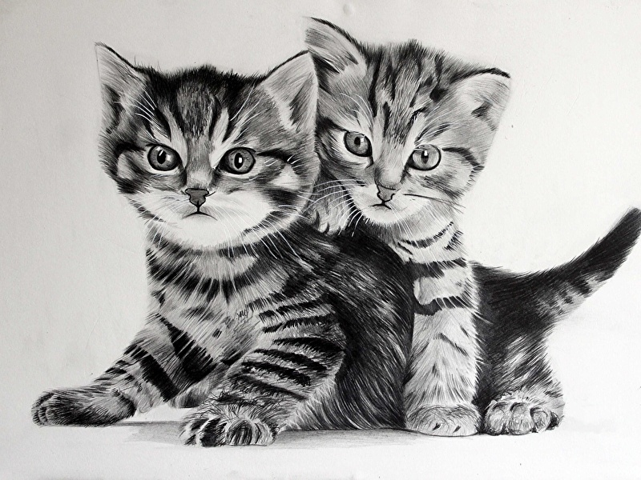
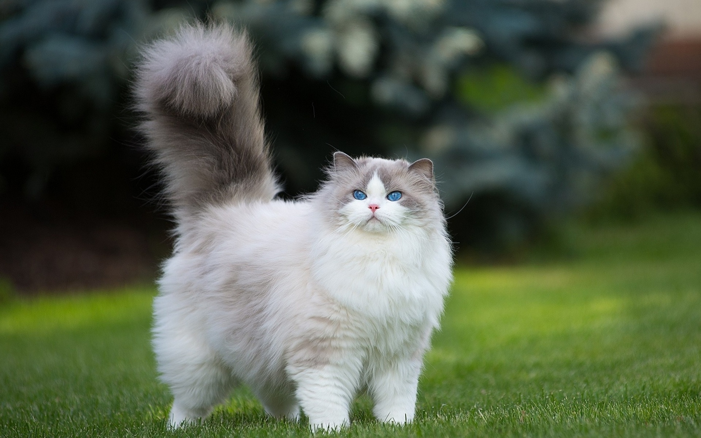
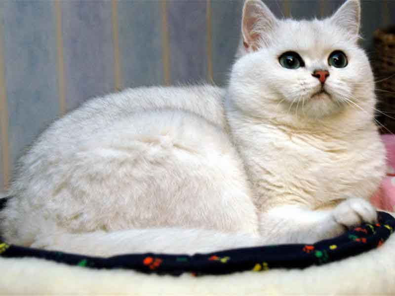

Возраст: 4 года
Порода: Фронт
Болезни: дедлайн
Язы́к разме́тки (текста) в компьютерной терминологии — набор символов или последовательностей,
вставляемых в текст для передачи информации о его выводе или строении.
Принадлежит классу компьютерных языков. Текстовый документ,
написанный с использованием языка разметки,
содержит не только сам текст (как последовательность слов и знаков препинания),
но и дополнительную информацию о различных его участках — например,
указание на заголовки, выделения,
списки и т. д.
В более сложных случаях язык разметки позволяет вставлять в документ интерактивные элементы и
содержание других документов.
Джеэс
Возраст: 4 года
Порода: Фронт
Болезни: дедлайн
JavaScript обычно используется как встраиваемый
язык для программного доступа к объектам приложений.
Наиболее широкое применение находит в браузерах как язык сценариев для
придания интерактивности веб-страницам.
Основные архитектурные черты: динамическая типизация,
слабая типизация, автоматическое управление памятью,
прототипное программирование, функции как объекты первого класса.
Зед
Возраст: 5 лет
Порода: Универский
Болезни: при смерти
Предмет страдания студентов
Дискретка
Возраст: 2 года
Порода: ШАД
Болезни: датасатанизм
В контексте математики в целом дискретная математика часто отождествляется с
конечной математикой — направлением,
изучающим конечные структуры — конечные графы, конечные группы, конечные автоматы.
Си
Возраст: 1 год
Порода: ШАД
Болезни: диабет
Компилируемый статически типизированный язык программирования общего назначения,
разработанный в 1969—1973 годах сотрудником Bell Labs Деннисом Ритчи как развитие языка Би.
Первоначально был разработан для реализации операционной системы UNIX,
но впоследствии был перенесён на множество других платформ.
Согласно дизайну языка, его конструкции близко сопоставляются типичным машинным инструкциям,
благодаря чему он нашёл применение в проектах, для которых был свойственен язык ассемблера,
в том числе как в операционных системах, так и в различном прикладном программном обеспечении
для множества устройств — от суперкомпьютеров до встраиваемых систем

Алгосы
Возраст: 2 года
Порода: Бородинские
Болезни: асм
Набор инструкций, описывающих порядок действий
исполнителя для достижения некоторого результата.
В старой трактовке вместо слова «порядок» использовалось слово «последовательность»,
но по мере развития параллельности в работе компьютеров
слово «последовательность» стали заменять более
общим словом «порядок». Независимые инструкции могут
выполняться в произвольном порядке, параллельно,
если это позволяют используемые исполнители.

Тервер
Возраст: 1 год
Порода: Матема
Болезни: нет
Тео́рия вероя́тностей — раздел математики, изучающий случайные события,
случайные величины, их свойства и операции над ними.

Клауд
Возраст: меньше месяца
Порода: Бэк
Болезни: спидорак
Вычислительные мощности Яндекса и сервисы для обработки и хранения данных.
Яндекс.Облако — публичная облачная платформа,
где вы можете создавать и развивать свои проекты.